Города-Герои: Их История Вдохновляет на Победу
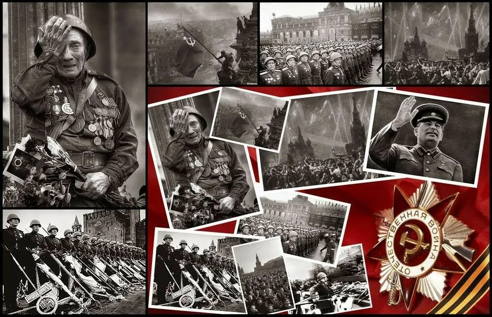Города-герои — это символы мужества и стойкости. Их подвиги навсегда останутся в нашей памяти, и мы должны помнить о них, чтобы вдохновляться их примером и передавать эту память следующим поколениям. Эти города — наше достояние, и их история заслуживает быть рассказанной и услышанной.
Каждый из этих городов имеет свою уникальную историю, наполненную героизмом и самопожертвованием. Мы должны чтить память о тех, кто отдал свою жизнь за наше будущее, и продолжать рассказывать о них, чтобы их подвиги не были забыты.
В первые дни Великой Отечественной войны, когда мир только начинал осознавать всю угрозу, Германия развязала молниеносное наступление на Советский Союз. Враг обрушил свою мощь на восточные рубежи, рассчитывая быстро сломить сопротивление. Но Советская армия и народ не собирались сдаваться. Гибель одних городов, страшные осады других — все это стало не только трагедией, но и величайшим проявлением мужества, стойкости и героизма.
Брест оказался первым городом, который принял на себя удар фашистов. 22 июня 1941 года, когда началась война, немецкие войска начали стремительное наступление, и Брест оказался на пути этого вторжения. Город был стратегически важен, и его захват открывал врагу путь вглубь СССР. Но защитники Брестской крепости оказали нечеловеческое сопротивление. Вместо того чтобы сдаться, они продолжали сражаться, несмотря на превосходство противника. Оборона крепости продолжалась более месяца, и за это время Брест стал символом героизма, стойкости и самоотверженности. Немцы, потрясенные упорством защитников, не могли поверить, что советские солдаты и мирные жители способны так долго противостоять всей мощи Вермахта. Брест не сдался, и его стойкость вдохновляла другие города, которые вскоре стали встречать врага в своих стенах.
После того как Брест пала, немецкие войска стремительно продвигались вглубь страны, захватывая один город за другим. Керчь и Севастополь на Черном море стали следующими мишенями. В этих городах, как и в Бресте, разворачивались ожесточенные бои. Севастополь, важнейший порт и военная база, оказался под осадой, которая длилась несколько месяцев. Каждый дом, каждая улица превращалась в укрепление, и советские войска вели жесточайшие бои, пытаясь сдержать врага. В городах и на их окрестностях действовали не только военные части, но и местные жители, которые поддерживали оборону, помогали раненым, устраивали засады. Это было не просто сражение, это была борьба за каждую улицу, за каждое здание, за каждый сантиметр родной земли. Но, несмотря на все усилия, эти города были захвачены, оставив в сердце каждого их защитника вечное чувство долга и гордости.
Но война не была проиграна. После первых поражений наступила решающая битва за Ленинград. Этот город стал одним из самых трагичных и героических эпизодов войны. В сентябре 1941 года фашисты начали блокаду Ленинграда, окружив город кольцом. Снабжение было прервано, и город оказался на грани голода. Но жители города и защитники не сдались. Ленинградцы продолжали работать, строить оборонительные сооружения, бороться за каждый дом, за каждую улицу. В условиях блокады, с минимальными ресурсами, они отважно противостояли врагу, и даже в самых тяжелых условиях продолжали верить в победу. Эта блокада стала олицетворением стойкости и несгибаемости советского народа, который с голодом, холодом и постоянными бомбежками продолжал защищать свой город. Лишь в январе 1944 года, после более чем двух с половиной лет страшной осады, Ленинград был освобожден, и городу было присвоено почетное звание "Город-Герой". Это освобождение стало символом того, что врага можно победить, несмотря на все его усилия.
Москва также оказалась под угрозой. В 1941 году, когда немецкие войска приближались к столице, все было поставлено на карту. Немцы надеялись, что захват Москвы станет решающим моментом в войне, а советские войска, ослабленные и перегруппировавшиеся после первых поражений, должны были сдаться. Но Москва не только выдержала осаду, но и нанесла контрудар. Это был момент перелома. Благодаря решительности командования и мощной обороне города, а также силе духа самих москвичей, враг был отброшен. Более того, советские войска начали контрнаступление, которое стало одной из решающих побед на восточном фронте. В битве за Москву соединились все силы — от солдат до простых жителей, которые копали окопы, строили укрепления, помогали армии в обеспечении.
Когда фашистские войска начали терять свои позиции на фронте, они попытались сделать последний решающий шаг и захватить Сталинград. Здесь происходило одно из самых жестоких сражений войны. Немцы окружили город, но не учли решимости советских войск и жителей, готовых сражаться до конца. Сталинград стал ареной не только ожесточенной войны, но и испытания воли и духа. Противник ожидал быстрого захвата города, но каждый день, проведенный в борьбе, приближал их поражение. Оборона Сталинграда стала настоящим переломным моментом в войне, символом победы над врагом. В конце 1943 года город был освобожден, и его защитникам были присвоены высшие награды за их героизм.
С каждым освобожденным городом силы Красной армии укреплялись. Тула и Новороссийск стали ключевыми этапами в наступлении, а Одесса и Минск — символами освобождения от фашистской оккупации. Эти города, как и другие, подвергались жесточайшему разрушению и страданиям, но все они становились живым доказательством того, что фашизм не пройдет. Когда по всему фронту началось контрнаступление, и враг начал терять свои позиции, мотивация советских солдат была подкреплена непоколебимой уверенностью, что каждый шаг вперед — это шаг к победе.
В конечном итоге, по мере освобождения этих городов, их жители и защитники не только восстанавливали разрушенное, но и чувствовали в себе мощный заряд надежды и веры в неизбежную победу. Победа в этих городах-героях стала той искрой, которая зажгла огонь решительного наступления, приведшего к полной победе над фашизмом. Города-герои были освобождены, но их героизм стал неотъемлемой частью победы. Эти города были не только символами мужества и стойкости, но и памятью о тех, кто сражался до конца, чтобы сохранить мир для будущих поколений.
 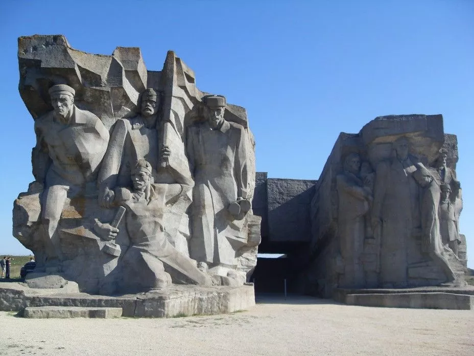
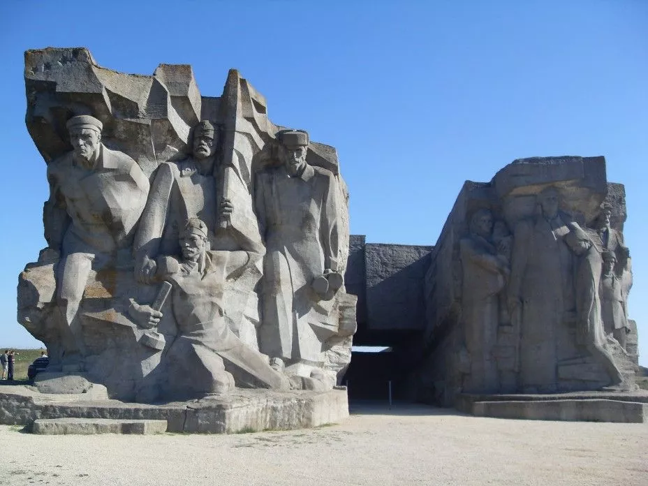
 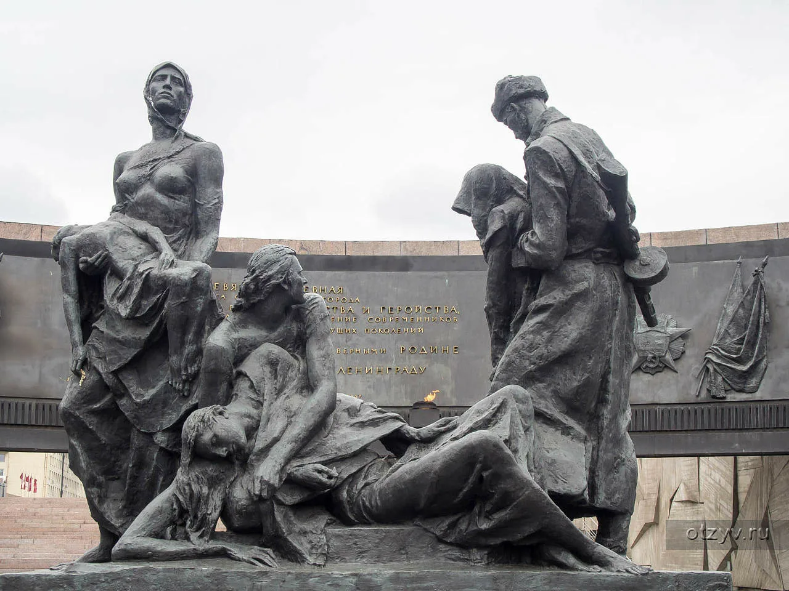
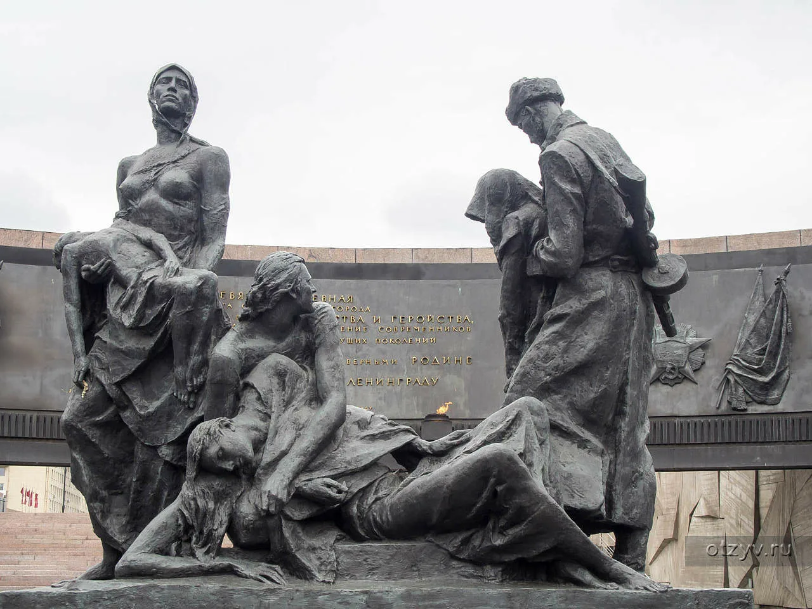
 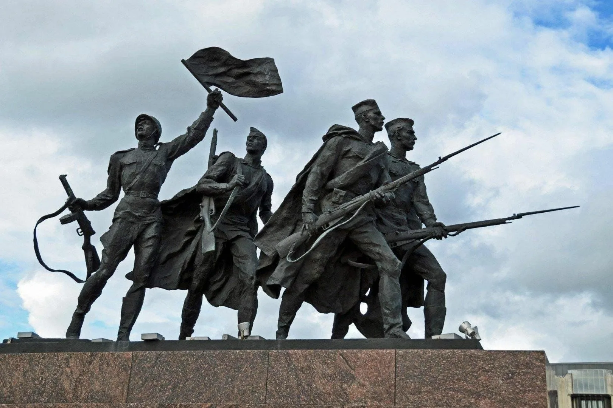
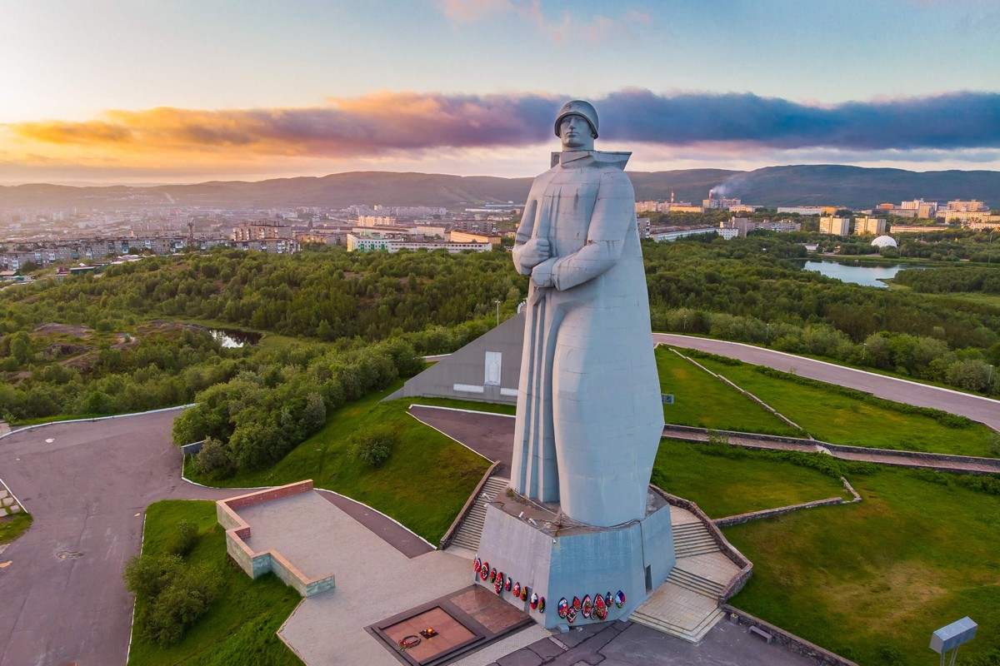
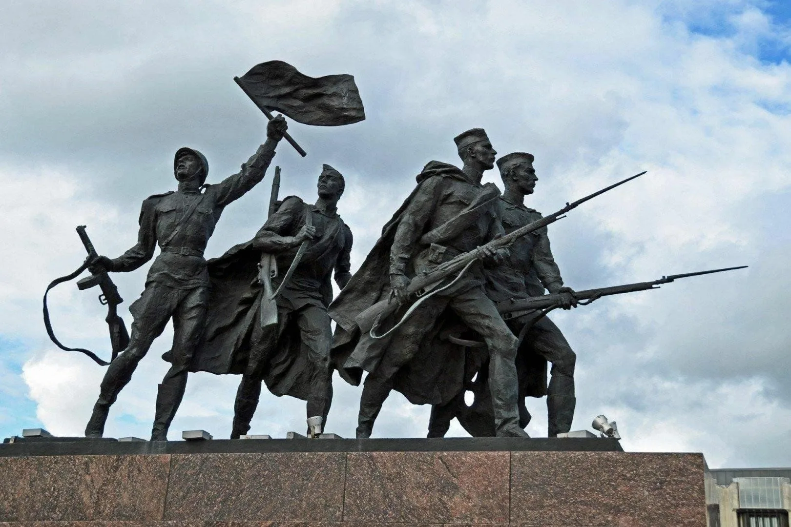
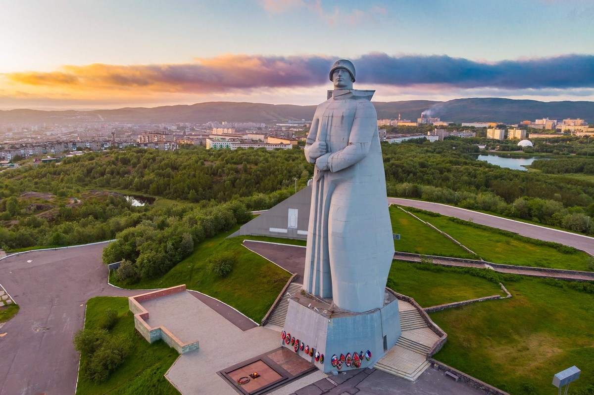

 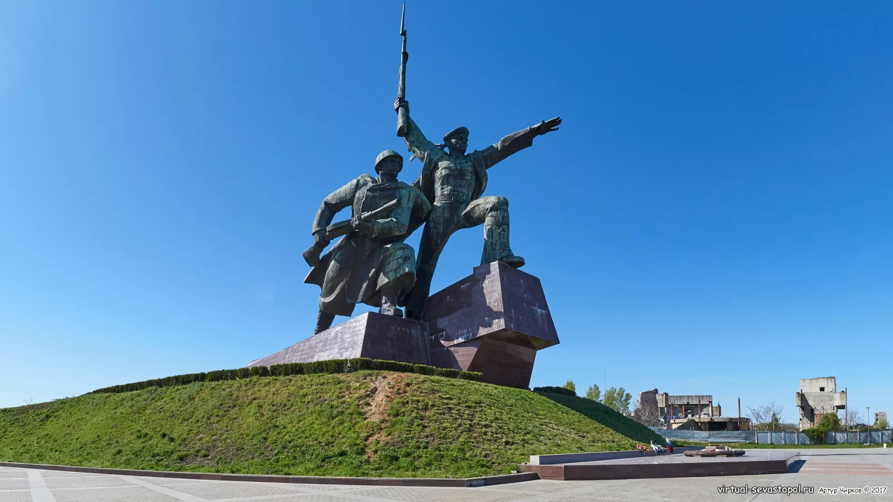
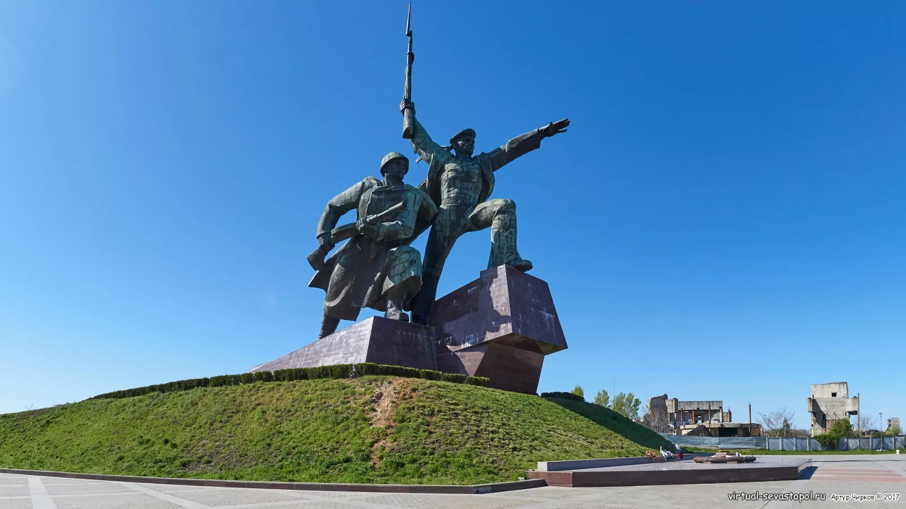